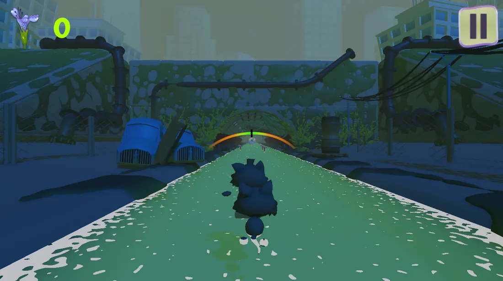
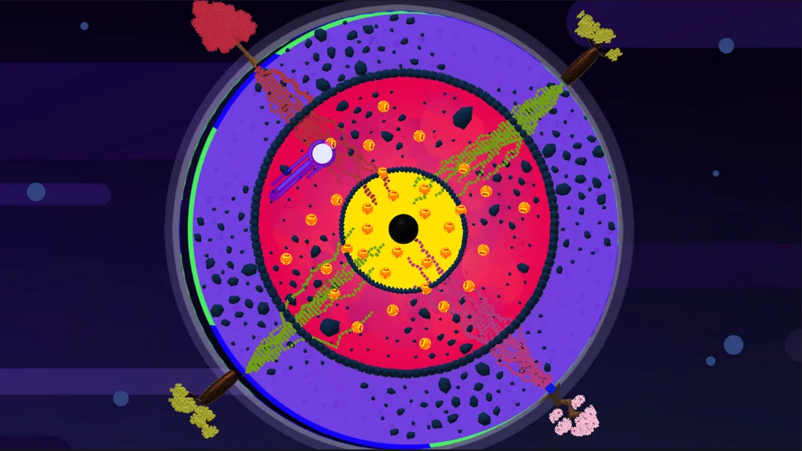
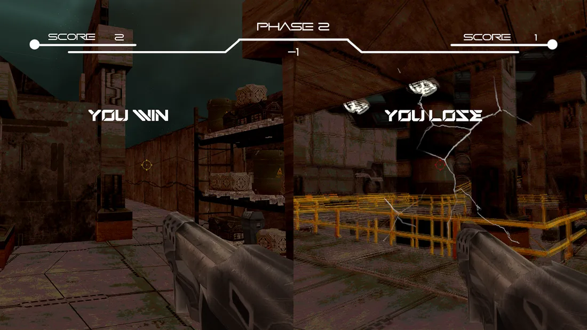
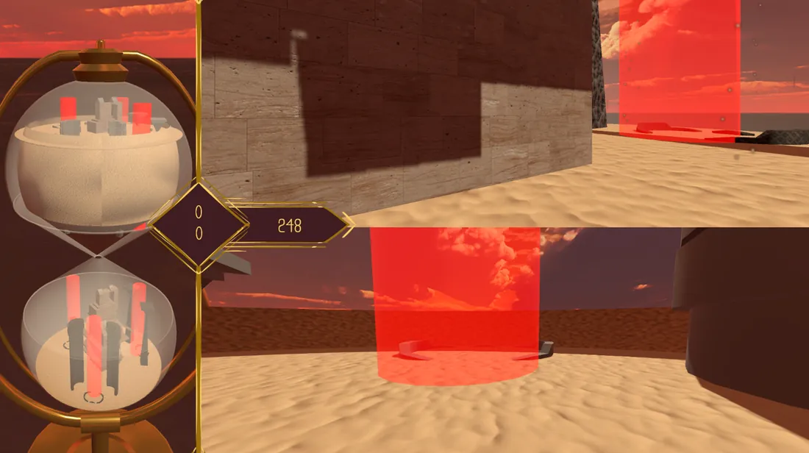

Various — Ubisoft GACHA, Global Game Jam, Perpignan Game Jam
Game Jams & Prototypes
Shipped small games under hard time constraints — most of them playable in a browser, several released publicly.
Various — Ubisoft GACHA, Global Game Jam, Perpignan Game Jam2021 – 2023personaltools

Role
Gameplay Programmer
Period
2021 – 2023
Cadence
48–72 hours per prototype
Role
Gameplay programming, level design, level art
Distribution
itch.io, browser-playable
Selected jams
Cat'ch Nip — Ubisoft GACHA 2022 (72 h)Five drawn destiny cards became the constraints. A mobile runner where you balance the phone's orientation and the cat's movement at the same time. Team of 10; I built the balancing, jump and obstacle mechanics while two other devs handled the store and scene management.
Espace Temps — Perpignan Game Jam 2022 (48 h) — Award of HonourTwo players trapped in an hourglass. I programmed the entire game: character controllers, evolving level design, the interconnected cubes between players and the scene manager. The real challenge was local multiplayer controller setup.
Hangry Monkey — Global Game JamTheme: War and Peace. Local 1v1 multiplayer; I programmed the gameplay mechanics and contributed to the game design.
Cheats of Honor — Global Game JamTheme: Break the system. A 1v1 split-screen FPS in the PS1 idiom where you win by exploiting glitches. Gameplay mechanics, level design and level art.
Miami's LifeguardA 2D co-op platformer — one player is the camera, the other is the lifeguard. The first game I coded entirely by myself, in Phaser 3 for HTML5.
Why jams are in a technical portfolio
A jam is a constraint exercise with no room to hide. Deciding what to cut, making
a mechanic legible in under a minute of play, and shipping something that actually
runs — repeatedly, in 48 hours — is the same judgement I use on production
pipelines, just compressed.
Gallery
Evidence
Use the strongest evidence you have: a finished render, a breakdown pass, a tool screenshot, a profiler capture.



